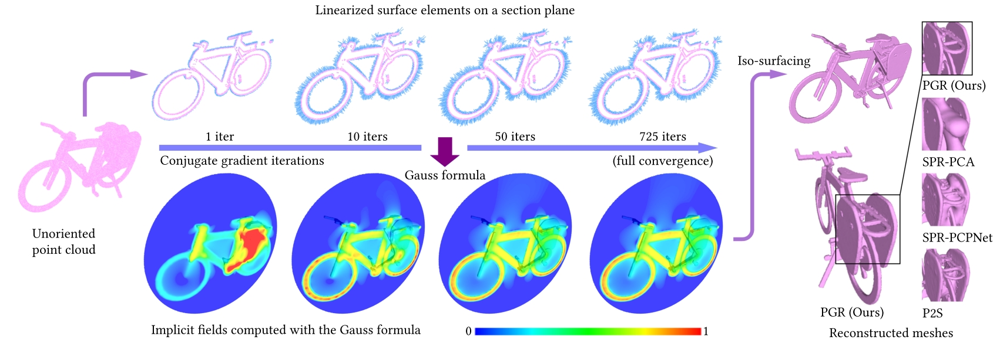

1Tsinghua University
2Yanqi Lake Beijing Institute of Mathematical Sciences and Applications (BIMSA)
3Beijing National Research Center for Information Science and Technology (BNRIST)
We use the Gauss formula, an extended version of winding number, to build an equation from which normals of raw points can be solved.

We propose Parametric Gauss Reconstruction (PGR) for surface reconstruction from point clouds without normals. Our insight builds on the Gauss formula in potential theory, which represents the indicator function of a region as an integral over its boundary. By viewing surface normals and surface element areas as unknown parameters, the Gauss formula interprets the indicator as a member of some parametric function space. We can solve for the unknown parameters using the Gauss formula and simultaneously obtain the indicator function. Our method bypasses the need for accurate input normals as required by most existing non-data-driven methods, while also exhibiting superiority over data-driven methods, since no training is needed. Moreover, by modifying the Gauss formula and employing regularization, PGR also adapts to difficult cases such as noisy inputs, thin structures, sparse or nonuniform points, for which accurate normal estimation becomes quite difficult.
Our method can deal with a number of difficult cases:
Even if noise is so large that the original shape is barely recognizable.
Surface reconstruction is a well-studied problem in computer graphics. However, most reconstruction algorithms require consistently oriented normals, and cannot deal with raw unoriented points. We tackle the problem of surface reconstruction from points without normals. Our insight comes from the Gauss formula, which can be seen as an extended version of the winding number formula. The Gauss formula allows us to write down an equation from which normals of unoriented normals can be solved. The process of writing down this equation can be thought of as building a parametric function space using the Gauss formula, with unknown normals as the parameters, so we term our method Gauss Reconstruction (PGR).
To convert the integral equation to a practical solvable system, we first discretize the integral by approximating it using a summation. This results in a linear system which is non-square, underdetermined and dense.
To efficiently solve the underdetermined dense system, we apply the CGNE (Conjugate Gradients for Normal Equations) solver plus our own adaptive regularization.